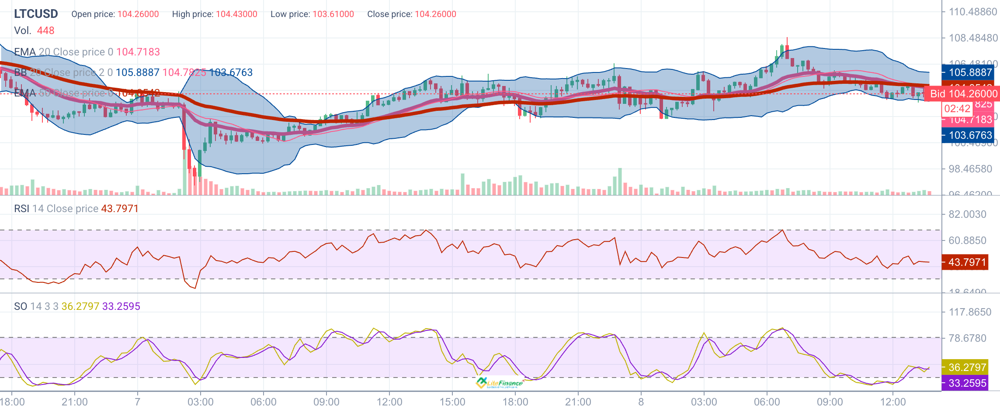
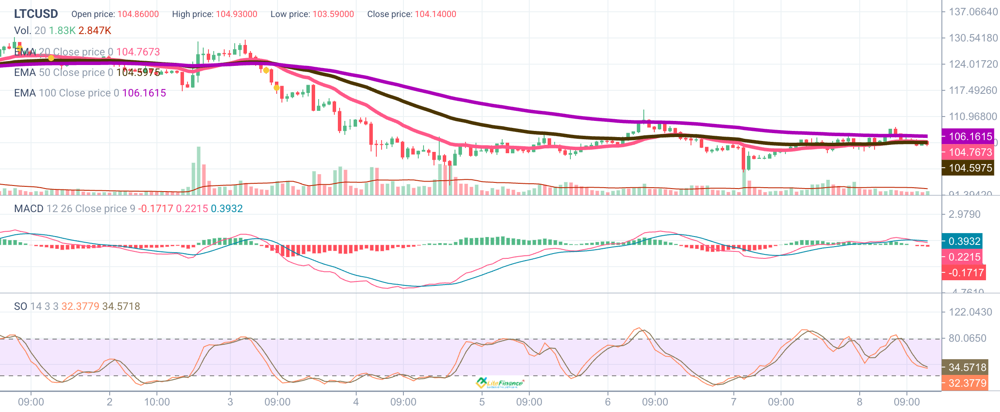
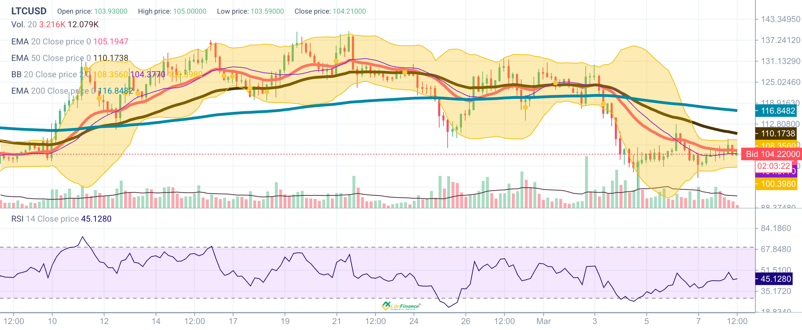
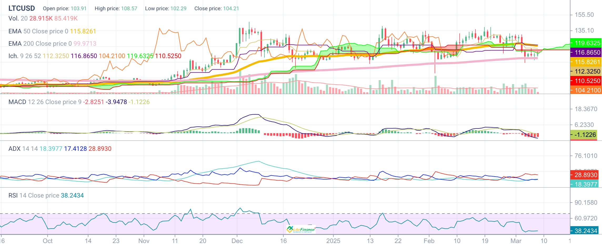

LTC/USD Technical Analysis & Trading Strategy
Analysis Date: March 8, 2025 (UTC) - Updated at 10:52 UTC
Current Market Overview
Litecoin is currently trading at approximately $104.26 against the US Dollar, showing signs of stabilization after recent market volatility. LTC has established a trading range between $103.50 and $105.00, following the broader cryptocurrency market's reaction to President Trump's crypto reserve announcement. Currently, Litecoin is experiencing a period of consolidation with price action trapped between the 20 EMA and 50 EMA on lower timeframes, suggesting a potential coiling pattern before the next directional move.
Multi-Timeframe Analysis

15-Minute Chart (Short-Term)
- Price Action: LTC/USD trading at $104.26 with moderate intraday volatility
- EMA Cross: Price between 20 EMA at $104.71 and lower Bollinger Band at $103.67
- RSI: Reading of 43.79, in neutral territory with slight bearish bias
- Stochastic Oscillator: Readings of 36.27/33.25, showing potential for a bounce from oversold conditions
- Volume: Below average, typical of consolidation phase

1-Hour Chart (Medium-Term)
- Price Action: Consolidating between $103.59 and $104.93
- EMAs: Price below 20 EMA ($104.76) and 50 EMA ($104.59), but above 100 EMA ($106.16)
- MACD: Mixed readings (-0.17, 0.22, 0.39) showing weak momentum
- Stochastic Oscillator: Low readings at 32.37/34.57, approaching oversold territory
- Volume: Gradually declining, indicating exhaustion of selling pressure

4-Hour Chart (Longer-Term)
- Price Action: Showing recovery attempts but trading below key EMAs
- EMAs: Below 20 EMA ($105.19), 50 EMA ($110.17), and 200 EMA ($116.84)
- Bollinger Bands: Trading near lower band with values $108.35/$104.37/$100.39
- RSI: Reading of 45.12, in neutral territory
- Volume: Elevated on price drops, showing potential accumulation at lower levels

Daily Chart (Primary Trend)
- Price Action: Trading at $104.21, in a medium-term downtrend
- EMAs: Below 50 EMA ($115.82) but above 200 EMA ($99.97), indicating overall uptrend with current correction
- Ichimoku Cloud: Price below the cloud, indicating bearish bias
- MACD: Negative reading (-2.82, -3.94, -1.12) showing bearish momentum
- ADX: Reading of 28.89, indicating moderate trend strength
- RSI: Reading of 38.24, approaching oversold territory
Key Support and Resistance Levels

- Strong Support: $102.00-$102.50 (recent low)
- Minor Support: $103.50-$104.00 (current consolidation range)
- Current Price: ~$104.26
- Minor Resistance: $105.00-$105.50 (recent intraday high)
- Major Resistance: $108.50-$110.00 (previous swing levels)
- Strong Resistance: $115.00-$116.00 (50 EMA on daily chart)
Market Structure Analysis
Litecoin has been in a corrective phase following the broader crypto market volatility in early March. The current market structure shows LTC trading below its medium and long-term moving averages but maintaining position above the critical 200 EMA on the daily chart, suggesting that the longer-term uptrend remains intact despite the recent correction.
The technical indicators present a mixed picture across timeframes, typical of a consolidation phase. The RSI is in neutral territory on the 4-hour chart but approaching oversold conditions on the daily, suggesting potential for a bounce. The MACD shows continued bearish momentum on the daily timeframe but mixed signals on lower timeframes.
The ADX reading of 28.89 on the daily chart indicates moderate trend strength in the current downward move. The Bollinger Bands on the 4-hour chart show LTC trading near the lower band, suggesting a potential bounce if support holds.
Of particular note is the Ichimoku Cloud on the daily chart, which shows LTC trading below the cloud, confirming the bearish short to medium-term bias. However, the price is approaching the cloud's lower boundary, which could provide resistance if price attempts to rally.
Recent Market Influences on Litecoin
- Bitcoin Halving Anticipation: LTC often moves in advance of BTC cycles and the upcoming Bitcoin halving is a significant factor
- Trump's Crypto Reserve Announcement: Created market-wide volatility with initial surge followed by correction
- LTC/BTC Ratio: Currently showing underperformance compared to Bitcoin
- Mining Ecosystem: Recent stability in hash rate and difficulty adjustments
- Broader Market Risk Sentiment: Correlation with macro risk assets and response to economic data
Key Economic Events - March 9-14, 2025 (UTC)
| Date | Time (UTC) | Currency | Impact | Event | Forecast | Previous |
|---|---|---|---|---|---|---|
| Mar 8 | 00:00 | USD | 🟠 | President Trump Speaks | - | - |
| Mar 8 | 01:30 | USD | 🟥 | Fed Chair Powell Speaks | - | - |
| Mar 8 | 04:00 | USD | 🟠 | President Trump Speaks | - | - |
| Mar 12 | 20:30 | USD | 🟥 | Core CPI m/m | 0.3% | 0.4% |
| Mar 12 | 20:30 | USD | 🟥 | CPI m/m | 0.3% | 0.5% |
| Mar 12 | 20:30 | USD | 🟥 | CPI y/y | 2.9% | 3.0% |
| Mar 13 | 20:30 | USD | 🟥 | Core PPI m/m | 0.3% | 0.3% |
| Mar 13 | 20:30 | USD | 🟥 | PPI m/m | 0.3% | 0.4% |
| Mar 13 | 20:30 | USD | 🟥 | Unemployment Claims | 226K | 221K |
| Mar 14 | 22:00 | USD | 🟥 | Prelim UoM Consumer Sentiment | 63.8 | 64.7 |
| Mar 14 | 22:00 | USD | 🟥 | Prelim UoM Inflation Expectations | - | 4.3% |
High-Impact Events Analysis
Fed Chair Powell Speaks (March 8, 01:30 UTC): Any hawkish tilt or indication of a slower rate cut path would likely strengthen the dollar and potentially pressure LTC prices. Conversely, a dovish stance acknowledging progress on inflation could support risk assets including Litecoin.
President Trump Speaks (March 8, 00:00 & 04:00 UTC): Given Trump's recent announcement about a US crypto reserve, any additional comments about which cryptocurrencies might be included would be significant for Litecoin. If Trump were to specifically mention LTC among potential reserve assets, it could trigger a strong bullish move.
CPI Data (March 12, 20:30 UTC): This represents one of the most important economic releases of the week. With CPI y/y forecast at 2.9% vs previous 3.0%, a lower-than-expected reading would strengthen the case for Federal Reserve rate cuts, potentially benefiting LTC and other cryptocurrencies. Conversely, a higher reading could delay rate cut expectations and temporarily pressure prices.
PPI and Unemployment Claims (March 13, 20:30 UTC): These releases will provide additional insight into inflation and labor market conditions. Lower-than-expected readings for both PPI and unemployment claims would be positive for LTC prices, while higher inflation or improving labor market data could be negative.
UoM Consumer Sentiment and Inflation Expectations (March 14, 22:00 UTC): These sentiment indicators could influence market risk appetite. Lower consumer confidence or higher inflation expectations could prompt Federal Reserve caution, potentially impacting crypto markets.
Trading Strategy
Calendar-Based Strategy for March 8-14, 2025
Weekend Position Management (March 8-9)
- Setup: Monitor for any volatility from Fed Chair Powell and Trump speeches
- Strategy: Consider lightening positions ahead of weekend to reduce exposure to potential gaps
- Risk Management: If holding positions, use wider stops (3-4%) to accommodate weekend volatility
Monday-Tuesday Consolidation (March 10-11)
- Setup: Evaluate weekend price action and prepare for mid-week data
- Strategy:
- Range-trading approach between $103.50-$105.50 if consolidation continues
- Look for potential entries near $103.00-$103.50 support zone if pullback occurs
- Risk Management: Keep position sizes moderate ahead of key US data later in the week
CPI Release Window (March 12, 20:00-22:00 UTC)
- High Volatility Expected: One of the key risk events of the week
- Breakout Strategy:
- If LTC breaks above $105.50 with strong momentum following lower CPI data, consider longs
- If LTC breaks below $103.00 on hotter-than-expected CPI data, exercise caution
- Stop Placement: Use wider stops (3-4%) during this volatile period
- Entry Timing: Avoid entering 5-10 minutes before the release (20:30 UTC)
PPI and Claims Window (March 13, 20:00-22:00 UTC)
- Setup: Second consecutive day of high-impact data
- Strategy:
- Follow established direction from CPI data if strong trend in place
- Look for reversal opportunities if previous day's move appears overextended
- Risk Management: Reduce position sizes if holding through multiple high-impact events
Sentiment Data and Weekend Preparation (March 14)
- Setup: Final trading day of the week with sentiment data impact
- Strategy:
- Consider profit-taking ahead of weekend regardless of direction
- Evaluate if UoM data reinforces or contradicts CPI/PPI narratives
- Risk Management: Reduce weekend exposure by at least 50% of normal position size
Trade Execution Scenarios
Scenario 1: Breakout Above Resistance
- Trigger: LTC breaks above $105.50 with increasing volume following positive catalyst
- Entry: Buy at $106.00-$106.50 with confirmation (strong volume, RSI below 70)
- Stop Loss: $103.00-$103.50 (below recent support)
- Take Profit: TP1 at $110.00, TP2 at $115.00, TP3 at $120.00
- Position Sizing: 1% risk, scaling out approach (50% at TP1, 30% at TP2, 20% at TP3)
- Follow-through: Add to position if US economic data is weaker than expected
Scenario 2: Bounce from Support
- Trigger: LTC finds support at $103.00-$103.50 zone
- Entry: Buy at $103.50-$104.00 with confirmation (bullish divergence or candlestick pattern)
- Stop Loss: $102.00 (below key support)
- Take Profit: TP1 at $105.50, TP2 at $108.50, TP3 at $110.00
- Position Sizing: 1% risk, scaling out approach (50% at TP1, 30% at TP2, 20% at TP3)
- Follow-through: Hold remaining position if $105.50 resistance is broken
Scenario 3: LTC/BTC Ratio Play
- Condition: LTC/BTC ratio reaches historical support level with bullish divergence
- Strategy: Long LTC with tighter stop, anticipating outperformance vs Bitcoin
- Entry: When LTC/BTC ratio shows reversal candle at support
- Stop Loss: Below the ratio's recent low
- Take Profit: Previous ratio resistance levels
- Position Sizing: 0.75% risk due to specialized nature of the trade
Trade Execution Plan
- Weekend (March 8-9): Monitor impact of Powell/Trump speeches, prepare for Monday
- Monday-Tuesday (March 10-11): Position adjustment ahead of CPI, potentially reduce exposure
- Wednesday (March 12): Prepare for volatility around CPI release, look for breakout opportunities
- Thursday (March 13): Follow established trend post-CPI, monitor PPI impact
- Friday (March 14): Consider profit-taking ahead of weekend, evaluate sentiment data impact
- Position Sizing: Adjust according to volatility and scenario (1% for breakouts, 0.75% for ranges)
Risk Management Guidelines
- Volatility Adjustment: LTC can experience significant swings around economic data releases. Consider wider stops during these periods.
- News Trading Risk: Avoid entering new positions 5-10 minutes before major news releases, particularly the CPI data at 20:30 UTC.
- Position Sizing:
- For breakout trades: 1% account risk
- For range trades: 0.75% account risk
- For LTC/BTC ratio trades: 0.75% account risk
- For counter-trend opportunities: 0.5% account risk
- Correlation Risk: Monitor Bitcoin movements closely, as LTC typically follows broader crypto market trends but with higher volatility.
Risk Factors to Monitor
- Bitcoin's price action, which often leads broader crypto market movements
- Comments from President Trump regarding crypto reserve assets
- CPI data deviation from expectations (forecast: 2.9% y/y)
- The LTC/BTC ratio, which has shown recent weakness
- Mining metrics, particularly hash rate and difficulty adjustments
- Weekend volatility, which can create gaps on Monday opening
- Funding rates for LTC perpetual futures
Conclusion
Litecoin is currently in a consolidation phase following recent market volatility, trading between support at $103.50 and resistance at $105.00. The technical structure shows mixed signals across timeframes, with bearish bias on shorter timeframes but still maintaining position above the critical 200 EMA on the daily chart.
The upcoming week features several high-impact economic releases, with Wednesday's CPI data representing the key risk event that could determine the next directional move. Traders should be prepared for potential volatility around these data releases, with appropriate position sizing and risk management.
The multi-timeframe approach suggests maintaining a neutral to slightly bearish bias in the very short term, but being prepared for potential trend resumption if key resistance levels are broken. The key levels to watch include immediate support at $103.00-$103.50 and resistance at $105.00-$105.50, with broader levels at $102.00 and $110.00 respectively.
Don't Miss These Trading Opportunities
LTC volatility is at its highest in 3 months
Our analysis has predicted 9 out of the last 10 major Litecoin price moves
Regulated broker • Fast withdrawals • Secure platform
Disclaimer: This analysis is for informational purposes only and should not be considered financial advice. The cryptocurrency market is highly volatile and speculative. Always conduct your own research and consider your risk tolerance before trading.